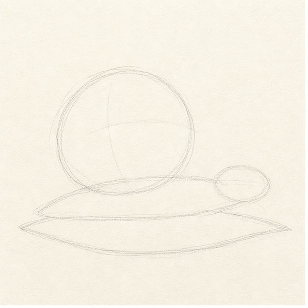
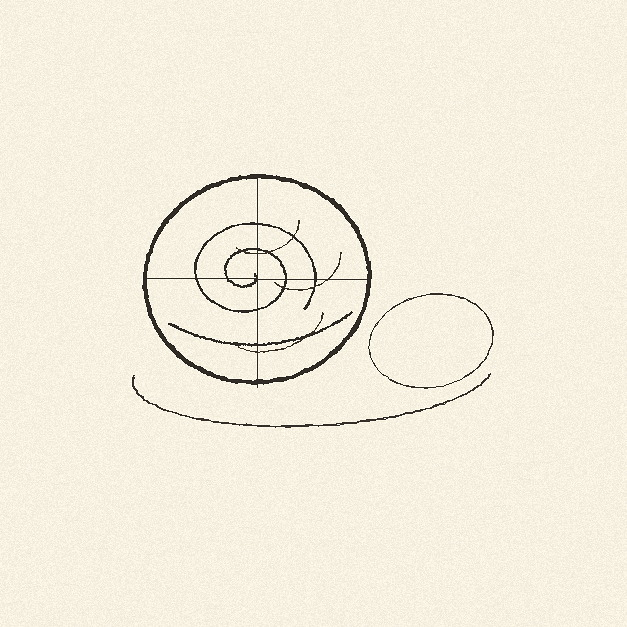
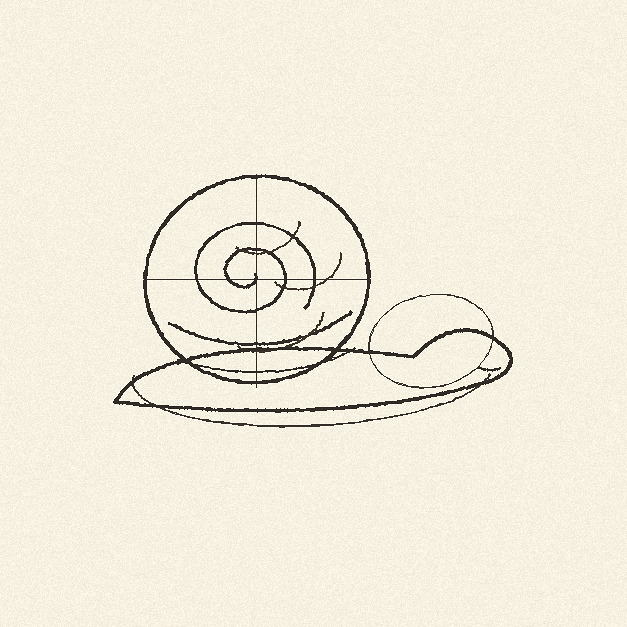
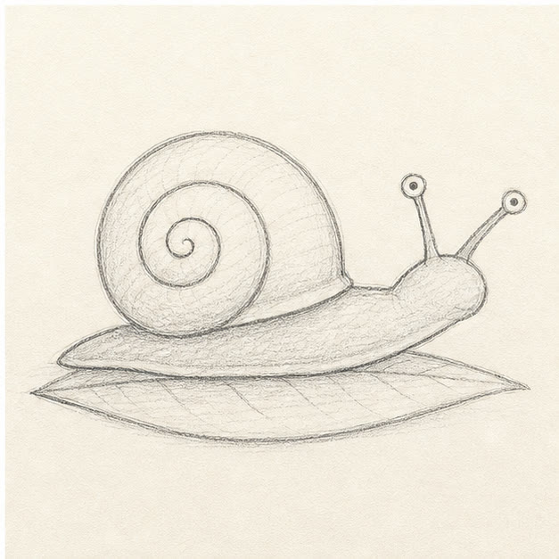

From the archive
Let's draw a garden snail
Work lightly through the construction, then darken only the lines that help the finished sketch.
-
01

Place the big guide shapes
Draw a tilted circle for the shell, a low curved belly line underneath, and a small oval where the head will sit.
Sketch tip: Keep the shell sitting slightly left of center. The head needs room to stretch forward.
-
02

Turn the circle into a shell
Darken the outside of the shell, then start a spiral near the center and wind it outward without touching the edge.
Sketch tip: Leave breathing room between spiral rings. Crowded rings make the shell harder to read.
-
03

Stretch the soft body
Draw the top of the body under the shell, round the head, and pull a flat foot line back under the whole snail.
Sketch tip: The body should stay lower than the shell. That contrast is what makes the shell feel heavy.
-
04

Add eyes and the leaf
Lift two curved eyestalks from the head, add tiny eye ovals, then draw the pointed leaf underneath the foot.
Sketch tip: Aim the eyestalks in different directions so the snail feels curious instead of stiff.
-
05

Shade the shell and leaf
Choose the contours you want to keep, add loose tan strokes to the shell, then shade the body and leaf with green pencil.
Sketch tip: Stop before the color becomes solid. The paper gaps help the sketch feel quick and handmade.